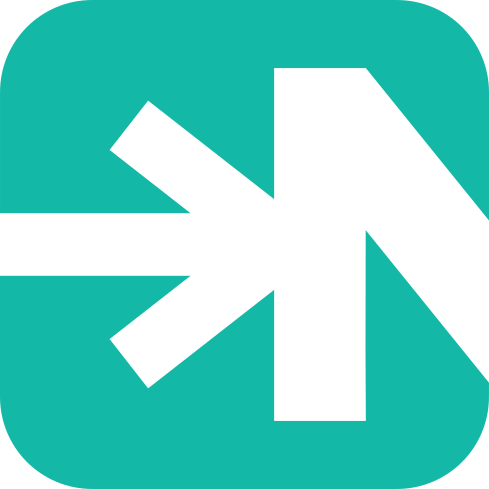

A programming language
built for language models.
NURL is a small, LLVM-backed systems language whose syntax is optimised for the way LLMs read and write code — fixed-arity prefix notation, a one-page LL(k≤4) grammar, and single-owner memory with a static borrow checker (on by default).
Contributors
Hindurable
iljasrb
Full reference at docs.nurl-lang.org. Driving an LLM agent? The compiler is also exposed as an MCP server — your assistant can build and run NURL directly.
Optimised for LLM token streams
NURL's grammar is designed for the statistical properties of language model output: fixed-arity prefix notation eliminates precedence ambiguity, short dependency windows reduce error propagation during generation, and the full syntax fits on a single page.
See the language reference for the complete feature set, grammar spec, and standard library documentation.
Regular prefix-arity grammar
Every operator has a fixed arity — no infix, no precedence cliffs. About 50 grammar productions (Python has ~100, C ~200), parsed by recursive descent with at most 4 tokens of lookahead.
Local semantics
A token's meaning is derivable from a short window of preceding tokens. No long-range dependencies that break mid-generation.
Single-owner memory
Values auto-drop at scope exit. A static borrow checker (on by default) turns use-after-move, alias double-free, escaping closure captures, interprocedural/return escapes, loop-carried double-frees, and iterator invalidation into compile errors.
Deterministic compiler
Identical source produces byte-identical output. No undefined behaviour, no platform-dependent semantics — the same program means the same thing everywhere.
LLVM-backed
The compiler emits LLVM IR and delegates codegen to clang. One pipeline reaches x86_64, ARM64, RISC-V, Xtensa, and wasm32-wasi — native speed by default.
Self-hosting
The compiler is 21,709 lines of NURL. The bootstrap compiles it with itself twice and requires byte-identical LLVM IR on both rounds before a build is accepted.
Prefix notation, end to end
Everything follows the same shape: OP ARG1 ARG2 …. No operator precedence to memorise, no parser surprises. Every snippet below compiles and runs against the current compiler.
// One line. No keywords.
@ add i a i b → i { ^ + a b }
// Calls use the same prefix shape.
( add 3 4 ) // → 7@ fizzbuzz i n → v {
: ~ i i 1
~ <= i n {
: b d3 == 0 % i 3
: b d5 == 0 % i 5
? & d3 d5 { ( nurl_print `FizzBuzz\n` ) }
? d3 { ( nurl_print `Fizz\n` ) }
? d5 { ( nurl_print `Buzz\n` ) }
{ ( nurl_print_int i ) }
= i + i 1
}
}// Tagged enum: sum type with payloads.
: | Expr {
Num i
Add *Expr *Expr
Mul *Expr *Expr
}
@ eval *Expr e → i {
^ ?? . e 0 {
Num n → n
Add l r → + ( eval l ) ( eval r )
Mul l r → * ( eval l ) ( eval r )
}
}// Function-type literal: ( @ ret_ty arg_tys )
@ apply ( @ i i ) f i x → i { ^ ( f x ) }
// Closures capture locals.
: i n 5
: ( @ i i ) scale \ i x → i { * x n }
( scale 7 ) // → 35
( apply scale 9 ) // → 45
The full feature set goes well beyond these snippets: generics (including
over option types), traits with bounds, match guards, or-patterns, and
N-ary payloads, try-operator error handling, defer, channels with
select, compile-time const evaluation, and a stackful M:N
work-stealing async runtime — all exercised by the
598-program test suite.
Full reference: docs.nurl-lang.org/docs/cheat-sheet.
Benchmark results
15 benchmarks, 5 languages, one algorithm each. Every row is gated on all 5 implementations producing the same output. NURL compiles through LLVM -O2. The table is generated from the last CI benchmark run, not edited by hand.
| Benchmark | NURL | C | Rust | Node | Python |
|---|---|---|---|---|---|
lcg20M-step 64-bit LCG + xorshift |
34 ms | 34 ms | 35 ms | 1,416 ms | 4,124 ms |
packet_classifier25M unpredictable branches |
50 ms | 50 ms | 50 ms | 123 ms | 3,575 ms |
ring_write20M ring-buffer stores |
37 ms | 37 ms | 37 ms | 57 ms | 5,004 ms |
histogram_bins20M binned increments |
35 ms | 35 ms | 35 ms | 58 ms | 5,179 ms |
prefix_scan1M 16-wide prefix scans |
19 ms | 19 ms | 19 ms | 58 ms | 3,720 ms |
binary_search5M lower-bound searches |
28 ms | 28 ms | 36 ms | 88 ms | 5,020 ms |
sort_window2M 8-element bubble sorts |
24 ms | 24 ms | 24 ms | 129 ms | 8,534 ms |
bloom_filter4M Bloom-filter queries |
15 ms | 16 ms | 16 ms | 2,146 ms | 5,960 ms |
hash_join5M hash-table probes |
23 ms | 24 ms | 24 ms | 2,604 ms | 6,454 ms |
sieveSieve of Eratosthenes to 10M |
16 ms | 16 ms | 16 ms | 56 ms | 2,656 ms |
fibRecursive fib(35) |
22 ms | 26 ms | 23 ms | 110 ms | 997 ms |
collatzLongest Collatz chain below 100k |
11 ms | 11 ms | 11 ms | 41 ms | 587 ms |
matmul256x256 integer matrix product |
37 ms | 36 ms | 36 ms | 66 ms | 2,666 ms |
json_parse20 parses of a 64 KB document |
6.7 ms | 7.2 ms | 9.6 ms | 30 ms | 31 ms |
nbody500k n-body integration steps |
36 ms | 36 ms | 35 ms | 77 ms | 2,513 ms |
Median wall-clock milliseconds, whole process, lower is better; NURL is
highlighted only where it prints a lower number than every other language —
two cells showing the same figure are a tie at this resolution, and neither
is marked. Same algorithm in every language — each row is
timed only after all 5 implementations print the same result, so a cell can
never be fast by computing something else.
Measured on GitHub Actions ubuntu-latest runner (4 logical cores)
with NURL 0.30.0 ·
clang 18.1.3 ·
rustc 1.97.1 ·
Node 22.23.1 ·
Python 3.12.3,
generated 2026-08-01 from commit 701df62.
Reproduce it with ./bench/bench.sh; sources, compile times, the
correctness gate and the process-start-up floor are in
bench/.
Target platforms
The compiler emits target-agnostic LLVM IR. Each platform below has been built and tested — desktop and server targets are available in the playground, embedded targets run on real hardware.
Embedded is real, not aspirational. A NURL HTTP file server runs on a Milk-V Duo — a $5 RISC-V board with 29 MB of RAM — cross-compiled as a static musl binary. On ESP32, NURL code flashed to an ESP32-D0WDQ6 drives GPIO directly through memory-mapped register writes, verified over serial; the RISC-V ESP32-C3/C6 family links with stock LLVM. Sources: duo/ and examples/esp32/.
The browser playground compiles to wasm32-wasi and runs the result
directly in your tab, and its /build_target endpoint cross-compiles
downloadable binaries for Linux (x86_64 / ARM64 / RISC-V), Windows, and macOS
(x86_64 + ARM64). The self-hosting compiler itself also builds to wasm, so the
entire toolchain can run in a sandbox.
176 stdlib modules, batteries included
Not stubs — production-hardened modules with their own test programs, leak-checked under AddressSanitizer.
Network
Distributed systems (secure p2p overlay, STUN, NAT traversal, DERP relay, SWIM membership, CRDTs). HTTP/1.1 and HTTP/2, both client and server. WebSocket, MQTT 5.0, SMTP, Unix sockets, UDP, TCP/TLS.
Data
JSON, TOML, YAML, XML, MessagePack, CBOR, and CSV with a unified serde layer. PostgreSQL (binary protocol, async, LISTEN/NOTIFY, COPY) and SQLite (transactions, WAL, authorizers) clients.
Concurrency
A stackful M:N work-stealing async runtime written in NURL, plus OS threads, mutexes, condition variables, channels with select, and atomics.
Core
Vec, HashMap, OrdMap, BTree, LRU Cache, Bitset, exact fixed-point decimal, arbitrary-precision integers, regex, SHA-1/256/512, MD5, BLAKE3, gzip, tar, UUID, time, paths, processes, signals.
AI-native
An Anthropic API client (streaming + tool use) and full MCP support — stdio and HTTP servers, client, sessions, registry. NURL programs can be agents and serve agents.
Tooling
LSP server, VS Code extension, nurlpkg test/bench runner, tools/repl, nurldoc, nurlfmt formatter, --lint pass, DWARF debug info (--g), and a differential fuzzer.
Projects
The programs written in NURL that compile and run against the current release.
The compiler itself!
21,709 lines of NURL compile NURL. Every release must reproduce its own LLVM IR byte-for-byte through two self-compilation rounds — a fixed point, not a checksum.
A Game Boy emulator
Complete DMG emulation: passes Blargg's cpu_instrs and instr_timing, renders dmg-acid2 pixel-perfect, and plays Tobu Tobu Girl with the full 4-channel APU — compiled to wasm, running in your browser.
The playground backend
play.nurl-lang.org is a NURL program: HTTP server, build orchestration, the MCP endpoint, and the package registry — all served by the language's own stdlib.
64 examples
From an Enigma machine and Game of Life to a distributed Push-To-Talk voice app, an HTTP/2 client, MCP servers, a Claude-powered agent, and a C64 emulator.
Getting started
Try it in the browser
An online editor with examples, build, and run — everything compiles to WebAssembly and runs locally in your tab. Cross-compile downloads for six native targets included.
Open the PlaygroundOne-line install
Download a prebuilt toolchain — compiler, package manager, and stdlib — for Linux (x86_64 / arm64), FreeBSD (x86_64) or Windows. See the install guide for prerequisites and options.
curl -fsSL https://nurl-lang.org/install.sh | sh
export PATH="$HOME/.nurl/bin:$PATH"
nurlpkg install nq && echo '{"a":1}' | nq .a
irm https://nurl-lang.org/install.ps1 | iex
$env:Path = "$env:USERPROFILE\.nurl\bin;$env:Path"
nurlpkg install nq; echo '{"a":1}' | nq .a
Clone and bootstrap
The only build dependency is clang (LLVM 15+) — no Python, no make, no cmake. The build script bootstraps the self-hosting compiler twice and verifies byte-identical IR.
git clone https://github.com/nurl-lang/nurl cd nurl ./build.sh ./nurl.sh examples/fizzbuzz.nu && ./fizzbuzzView on GitHub
Syntax highlighting + LSP
A VS Code / Windsurf extension lives under tooling/vscode-nurl/, backed by a real LSP server with diagnostics and references. The playground ships the same Monaco tokenizer.
48 packages, one command away
reg.nurl-lang.org is the package registry — 281 published versions of real libraries and tools, not placeholders. Semver ranges in nurl.toml, a lockfile for reproducible installs, and a signature on every tarball that nurlpkg checks before it unpacks anything.
nurlpkg search whisper # search nurlpkg install nq # program → your PATH nurlpkg add tensor # library → deps/ nurlpkg publish # your turn
- Signed, and verified in pure NURL. The registry signs every tarball with Ed25519;
nurlpkgverifies that signature against a pinned public key, and the SHA-256, before a single file is written. - Readable before you install it. Every published version gets generated API docs and a file browser on the registry — you can read a package's source without downloading it.
- Reproducible.
nurl.lockpins what you resolved,nurlpkg verifyfails on drift, and a bad version can be yanked without breaking the ones that pinned it. - Your own packages. Sign in with GitHub, mint a token with
nurlpkg login, andnurlpkg publish— with--dry-runto walk every gate first.
nurllama
Run language models locally: pull a GGUF model, chat with it, or serve an ollama-compatible API your existing clients already speak.
whisper
Speech recognition in pure NURL — real audio in, real text out, running OpenAI's Whisper checkpoints as shipped.
onnx
Load a trained ONNX model and run inference on the GPU, written entirely in NURL.
tensor
The n-dimensional array the ML packages share — the reusable ndarray, GPU-backed.
grad
Reverse-mode autograd over tensor: record a tape with ops that mirror its surface, call backward, train.
yoloe
Promptable open-vocabulary object detection and segmentation — a NURL port of YOLOE, on the GPU.
wasmtime
A WebAssembly runtime written from scratch in NURL — no libwasm, no embedded engine.
image
PNG and JPEG decode, encode and raster ops with no native library and no shell-out.
nq
jq-lite: filter JSON on stdin with a small query language. The one-liner in the install block above.
Also published: gpu and gpukit (CUDA driver API + NVRTC, with an OpenMP CPU backend),
tls, psql, redis, http, swarm,
embed, safetensor, vindex, cli, chart,
template, cas and more — the full list, with docs and sources for every version, is at
reg.nurl-lang.org.
MCP server
NURL exposes the compiler toolchain as a hosted Model Context Protocol server. Connect any MCP client to build, run, and cross-compile NURL without installing the toolchain locally.
Endpoint
References
Specifications, documentation, and historical records.
Documentation
Install, compile, and run NURL — guides and reference beyond the README, kept up to date as the language moves.
The README
A complete tour of the language, runtime, and pipeline — the canonical reference document.
Formal grammar
EBNF spec lives in spec/grammar.ebnf. Historical snapshots track the language's evolution.
Changelog
Every release documented in Keep-a-Changelog format with the reasoning behind each fix — currently at v0.30.0.
Roadmap
What's done, what's next. Maintained alongside the source so it doesn't drift from reality.
Package registry
48 packages published and installable with nurlpkg install <name> — browse, search, and read docs on the registry.